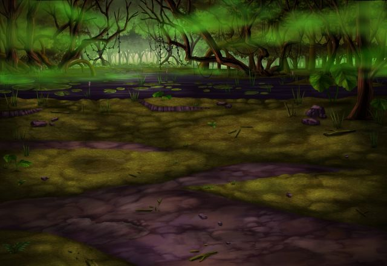

んん？ あれは何です？ ほらアリス、あそこに変な小動物がいます！
ロネッサ
あー、逃げた！？ こらー、待て待てですー！
アリス
仕方ない…… 私も、後を追うしかなさそうね。
ロネッサ
あれー、おかしいですねー？ こっちに逃げたはずなんですが……。
ロネッサ
どうやら、アリスは迷子になってしまった ようですね！ うー、困った人です！
？？？
あははっ、面白い人ー。 こーんな自由な人、初めて見たわ。
ロネッサ
あっ、どーもですー！ ……って、あなたは誰ですか？
ロネッサ
んー、そうですねー。ちょっとアリスに似て いますから……ひょっとして、妹さん？
第六皇女
正解は、アリスの腹違いのお姉さんよ♪ 私は第六皇女で、あの子は第八皇女だもの♪
ロネッサ
んー？ でも、アリスのお姉さんが、 どうしてここにいるんです？
第六皇女
お父様の命令で、アリスを監視していたの。 それが、私のお仕事なんだ。
ロネッサ
うーん、監視とは…… なかなか、穏やかならぬ話ですねー。
第六皇女
でも、本当はそれだけじゃないんだよ？ 私ね、叔父様にもこっそり教えちゃうの。
第六皇女
カッコ良くて、強くて、優しくて、 皇女全員の、お兄様みたいな人なんだー。
第六皇女
私が、アリスとエルザのことを教えるとね、 叔父様は、頭を撫でてくださるの。
ロネッサ
へー、良い方なんですねー！ 私も昔、お姉ちゃんに撫でてもらったなー！
第六皇女
私、アリスを監視しながら、 あなたのことも、ずーっと見ていたの。
第六皇女
あなたは、私とよく似ているわ。 だから、あなたとお話がしたかったんだ。
ロネッサ
でも、いいんですか？ 私なんかに話してしまって？
第六皇女
うん、もちろん♪ だってあなた、異世界の住人だもの♪
第六皇女
そのうち、元の世界に帰ると思うし、 だったら何の問題もないわ。
第六皇女
あ、でも、アリスには内緒にしてね？ もし話したら、殺しちゃうから♪
ロネッサ
何だか事情がありそうですし、 アリスには秘密にしてあげます。
第六皇女
ふふっ、ありがとう♪ じゃあ特別に、もう１つ教えてあげる。
第六皇女
研究所跡にある魔具を調べてみて。 きっと、帰る手掛かりがあるはずだから。
第六皇女
じゃあね、バイバイ！ 私との約束、絶対に忘れないでねっ♪
ロネッサ
もー、何処に行っていたんです？ 迷子はダメですよー！


{kind=link}
{kind=link}
{kind=link}